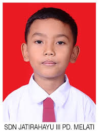

| No | Gambar | Nama Depan | Nama Belakang | Usia | Jenis Kelamin | Golongan Darah | Tempat tanggal lahir | Nomor Telepon Pribadi | Nomor telepon Orang Tua | Alamat | Penyakit sedang di derita | Penyakit yang pernah di derita | Alergi terhadap obat obatan | Alergi terhadap makanan |
|---|---|---|---|---|---|---|---|---|---|---|---|---|---|---|
| 1 | Amel | Ramdhani | 23 | Perempuan | A | Jakarta 18 APRIL 2000 | 0898910201307 | 087809189810 | Kp. Suksari Kota Tangerang | Lambung | Lambung | Tidak Ada | Udang dan Ikan | |
| 2 | Faiz | Rizki | 26 | Laki - laki | AB | Yogyakerta 27 Januari 1977 | 089652512838 | 088210668671 | Perumahan Islamik Village Kabupaten Tangerang | Asma | Jantung | Tidak Ada | Tidak Ada | |
| 3 | Riska | Kurniawati | 18 | Perempuan | O | Bandung 2 Agustus 2005 | 088190290190 | 088211668672 | Perumahan Arafah blok D Tangerang | Demam | Tipes | Tidak Ada | Tidak Ada | |
| 4 |  | Rafli | Kurniawan | 10 | Laki-Laki | AB | Tangerang 8 Juli 2013 | 087890290180 | 089611668632 | Kp.Bencongan Tangerang | Batuk dan Pilek | Tipes | Tidak Ada | Ikan dan Seefod |
| 5 | Kevin | Sanjaya | 20 | Laki-Laki | O | Kalimantan 8 Januari 2003 | 089690290179 | 087811668632 | Perumahan Palem Semi Tangerang | Asma | Kanker | Tidak Ada | Nasi |